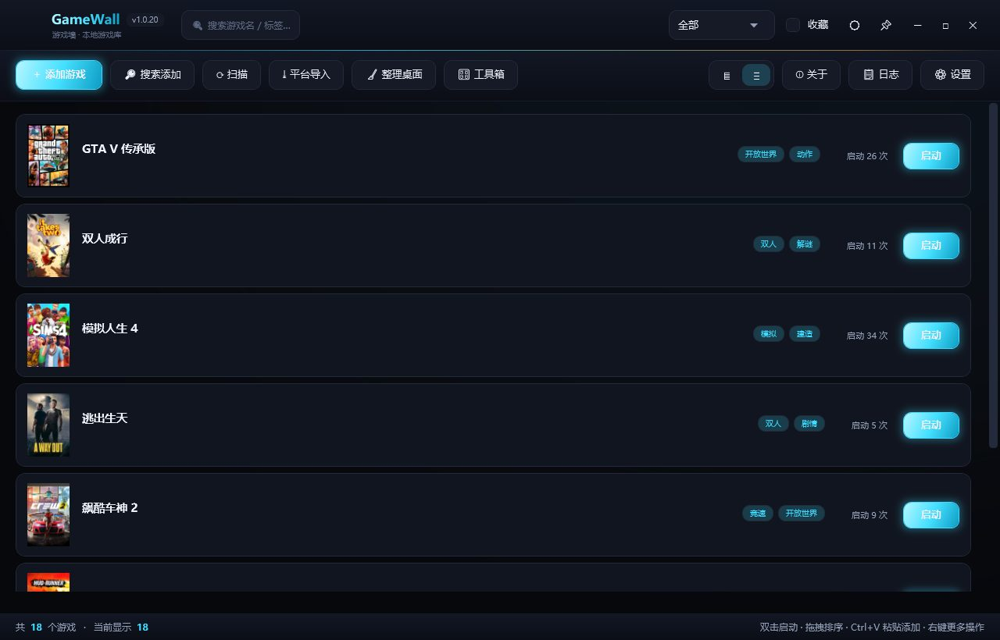
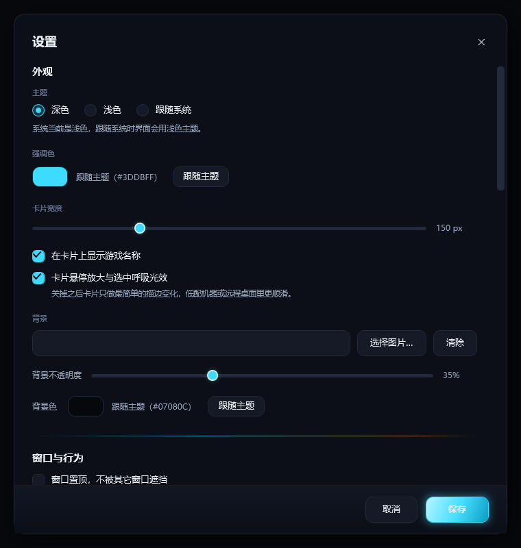
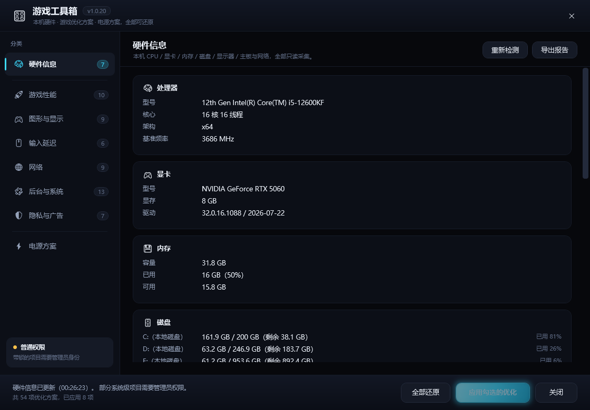
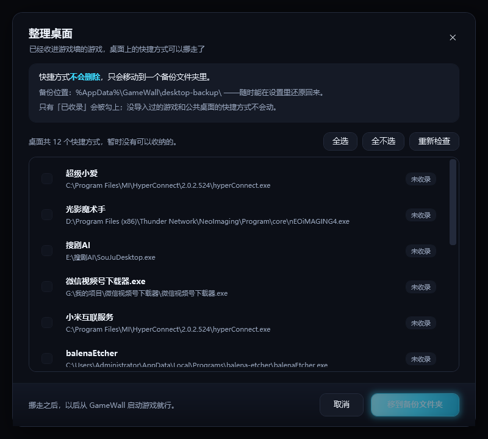
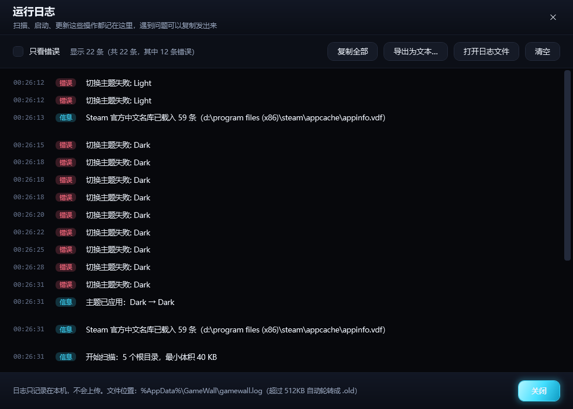
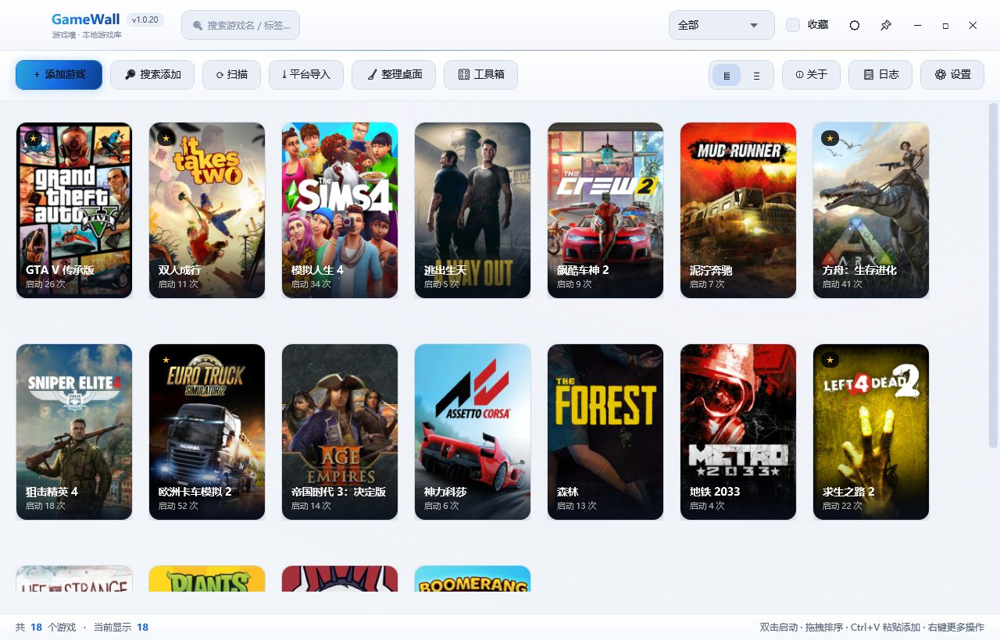
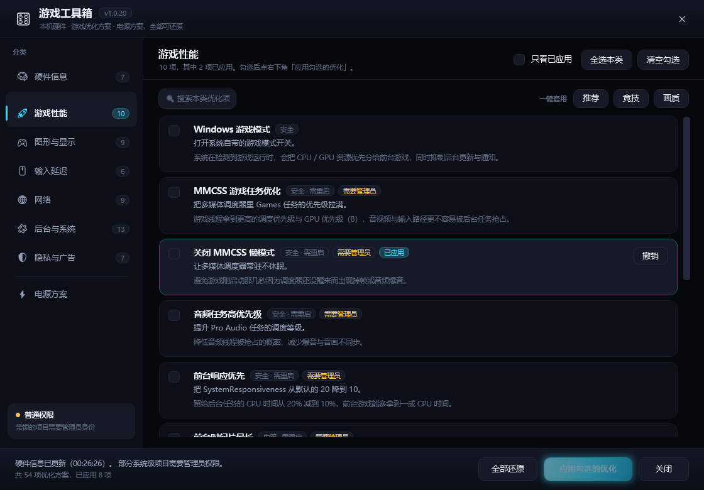

智能扫描
自动剔除平台本体、启动器、运行库和反作弊组件。同一游戏有多个 exe 时，按「目录说谎度 → 深度 → 体积」三档打分，只留主程序。
Playnite 那类工具越堆越重，GameWall 走的是另一条路： 一个 exe，双击就开，该有的都有，不该有的一个不来。
自动剔除平台本体、启动器、运行库和反作弊组件。同一游戏有多个 exe 时，按「目录说谎度 → 深度 → 体积」三档打分，只留主程序。
先读 Steam 本地 librarycache 缓存，没有就用 appid 从 Steam CDN 取 600×900 竖版封面。像素校验挡住 16×16 图标被当封面用。
游戏库、设置、日志、硬件快照全部只写在 %AppData%\GameWall\。代码里没有任何上传接口，联网只有取封面和查更新两件事，都能关。
启动时核对全部路径，失效的在顶栏提示「有 N 个游戏的路径失效了」。点「去修复」按文件名与目录层级猜新位置，整个盘搬家还能选新根目录一次对上。
已收录的游戏，桌面快捷方式一次性挪走。全部移动到备份目录并写 restore.json 记录原始路径，随时一键还原。公共桌面一律不碰。
手动选文件、从资源管理器拖进来、Ctrl+V 粘贴路径、输入名字递归搜索。也可以直接读 Steam / Epic / GOG 已安装列表。
多标签筛选、空格分词的多关键词 AND 搜索（名称 / 标签 / 备注 / 来源）、★ 收藏夹。拖拽排序，顺序自动保存。
一个 zip 打包游戏列表 + 封面 + 图标，通常几 MB。换电脑或重装系统直接导回来，不用重新扫一遍。
只实例化视口里的那几行卡片。实测 200 条游戏启动约 1 秒，和只有 6 条时首屏一样快。
下面每一张都是 RenderTargetBitmap
直接抓窗口视觉树得到的结果，不是拼的示意图。






卡片式视图 — 2:3 竖版封面，悬停放大并浮起外发光，双击直接启动
左栏分类，右侧整块只显示当前分类。每一项都会在写注册表之前把原值存进
applied.json，
「全部还原」一键撤回 —— 还原时不存在的值直接删掉，不会糊一个 0 上去。
CPU / 主板与 BIOS / 内存 / 显卡 / 硬盘分区 / 显示器 / 网卡，全部走 Win32 与注册表，不装驱动、不联网
游戏模式、MMCSS 任务优先级、CPU 调度量子
硬件加速 GPU 调度、独显优先、Flip Model、Auto HDR / VRR、着色器缓存
鼠标加速、键盘重复速率、菜单与悬停延迟
网络限流、拥塞控制、TCP 超时与端口、DNS 缓存
游戏 DVR / Game Bar / Xbox 服务、SysMain、搜索索引、NTFS 与音频
推荐内容、活动历史、Copilot、Recall、NVIDIA 遥测
直接调 powrprof.dll 枚举与切换，可一键复制「卓越性能」，不调 powercfg.exe

取封面、查更新。两件都能关。关掉之后完全离线可用，没有任何埋点、没有账号、没有统计上报。
%AppData%\GameWall\，代码里没有任何上传接口。tweaks\applied.json。「全部还原」一键撤回，高风险项默认隐藏。restore.json 记着原始路径，随时还原。SHA256SUMS.txt 供手动核对。自包含单文件，目标机不需要预装 .NET 运行时
默认装到非系统盘，可选桌面快捷方式，可从系统设置正常卸载
单个 exe 丢到任意目录双击即用，不写系统目录
%AppData%\GameWall 里的游戏库、封面、优化备份全部保留。重装后直接接着用。想主动清干净的话，删掉这个目录即可。
Get-FileHash 比对 Release 附带的 SHA256 值确认文件完整，再选择「仍要运行」。